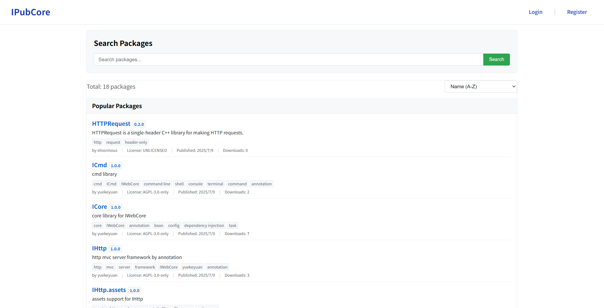

包集成¶
本篇文档描述如何在 packages.json 中进行包的管理。
前言¶
IPubCore 网站¶
IPubCore 网站是 IMakeCore 用于查找和下载包的网站，地址是 https://pub.iwebcore.org。
IPubCore 是由 IWebCore 中 IHttpCore 框架编写的后端，react 编写的前端，这里推荐用户使用 IHttpCore 来编写自己的 http 服务器。
用户可以在这个网站上搜索各类的包，搜索到的包可以将包名和版本写到 packages.json 文件中去。IMakeCore 会自动下载该包，并集成该版本的包。
IPubCore 网站界面如下所示：

之后用户使用的包都可以在这里进行搜索。
如果搜索不到相应的包，并且该包存在源码，你可以发邮件至yuekeyuan001@gmail.com 联系我 ，我来封装一个上传上去。当然用户也可以自己上传，或者封装为本地的包。
更多关于 IPubCore 的帮助文档，请参考 IPubCore。
ipc 命令行工具¶
ipc 命令行工具是 用于管理 IWebCore 项目的命令行工具。对于IMakeCore而言，它提供了初始化 IMakeCore, 包管理，用户管理等一系列的功能。
ipc 工具是由 IWebCore中的ICmdCore框架编写而成，这里推荐用户使用 ICmdCore 工具来进行用户自己的命令行工具的编写，非常的方便和人性化。
比如用户想要搜索一个包，则可以使用 ipc search 命令进行搜索。
用户添加一个包，则可以使用 ipc add 命令，移除一个包使用 ipc remove 命令。修改一个包的版本，使用 ipc update 命令, 如果想查看所有的包，则可以使用 ipc list 命令。
当然，在项目中，最方便的修改方式还是直接修改 packages.json 文件。
如何集成一个包¶
所有的包都需要在 packages.json 文件中的 packages 域中定义。他们的定义方式如下：
name : version¶
最基本的包集成方法就是 name : version 这种形式。 这里指定了包的版本。如果本地没有这个版本的包，IMakeCore 将尝试从服务器拉取该版本的包。如果服务器拉取失败，则该版本的包配置失败。用户需要检查该包该版本是否存在。
version 的形式是 xxx.xxx.xxx 。例如 1.0.0 这种形式，其他的形式，如 beta 之类的目前不支持。
它的使用方式如下：
name : *¶
这种形式不指定包的具体版本。
IMakeCore 在加载该包的时候，会扫描本地所有的包，如果找到该包，会使用扫描到的包的最高版本进行加载。如果没有找到该包，会在服务器上下载该包的最新版本，并进行加载。
所有这里有一点要注意：如果用户使用 * 来导入包，如果用户对于版本有要求，用户并不能确定的导入到自己想要的版本。如果用户想使用最新版本，而本地存在的并非是最新版本，在包加载的时候，加载的也不会是最新的版本。用户需要指定版本号加载最新版本，或者通过 ipc update 来更新本地包到最新版本来进行加载。
name : x¶
这里的 x 是字符 x ['eks]， 用户也可以使用大写的 X 来书写。
如果一个包标记为 x，那么在加载 packages 中所定义的包的时候，这个包会被过滤掉，不会加载这个包。
IMakeCore 定义这个 x 的目的是由于 json 文件不能有注释注掉要导入的包。用户如果只是想临时去掉这个包，则可以使用 x 作为包的配置项。
更复杂的包配置¶
上面讲述的是简单的，键值对，并且值是字符串的，一行写的下的包配置。
IMakeCore 支持更复杂的配置，用户可以配置一个包更多的信息。此时的键值对的 值不再是一个字符串，而是一个对象集合，如下所示：
在上面的配置中，用户可以指定复杂的内容，以满足用户对于个性化配置的需要。
下面我们一以来讲解对象中的这些属性都是什么意思。
version¶
这里的 version 和我们一行能写的包配置的 version一般无二。用户可以设置具体的版本，可以使用 * 来表示所有版本都可以接受， 也可以使用 x 来表示这个包不能够被解析和加载到项目中去。
version 是一个必须项。用户必须申明该包的版本，即使他是 * 任意版本。
path¶
path 的值是一个字符串。
这里的 path 是包的本地路径，如果用户配置了本地路径，IMakeCore 会从本地加载包。相应的，如果在这个路径下面找不到这个包，那么就会包加载错误，用户需要手动检查该包还在不在，包的版本和我们定义的版本是否一致。
path 可以省略不写。不写的话，IMakeCore 会使用其他的路径加载。
如果用户写了 path 路径，那么 path 的优先级是最高的，IMakeCore 只能从这个路径中去查询包。
url¶
url 可以是一个字符串，表示一个 url路径， 也可以是一个字符串序列，表示一系列路径。
这里的 url 是包的下载地址，如果用户没有配置本地路径，或者在本地没有查找到相关的包，那么IMakeCore 就会使用用户定义的url路径顺序下载包，尝试解析加载包。
如果url 指定多个，并且前一个 url 下载到包了，但是该报并不匹配配置中的包，那么此时IMakeCore不会尝试下载解析后面的包，而是直接报错。此时用户需要手动检查包的配置。
url 可以省略不写。
forceLocal ¶
forceLocal 的值为 bool 类型，默认为 false。
forceLocal 如果为 true。那么表示这个包必须从项目路径下的包文件夹中加载包。如果项目路径下的包文件夹中没有该包，IMakeCore 会复制一个包到该路径下，并进行加载。
项目路径下的包文件夹 默认是项目路径下的.lib 文件夹，用户也可以在package.json 中配置其他路径。
forceLocal 存在的意义有以下两点。
- 用户对一个包想进行一些更改，以满足自己的要求。此时如果直接在包上进行更改，则会污染这个包。导致其他项目出现问题。如果拷贝到项目路径下，则没有这个问题。
- 用户想将这个项目拷贝分享，而将要拷贝的位置没有安装 IMakeCore, 或者是断网状态，或者是想直接拷贝过去编译，那么将依赖的包拷贝到项目文件夹下无疑是一个很好的方法。
forceLocal 字段除了可以配置在包属性内，可以配置在 packages.json 的公共域中，具体用法参考 forceLocal
使用 ipc 进行包管理¶
ipc search¶
该命令的格式如下：
它有一个 searchText 参数
如果使用该命令行，则是如下：
用户可以通过此命令搜索网络上的库。
ipc add¶
该命令的格式如下：
它可以有两个参数，第一个参数是包名称，第二个参数是版本号，第二个参数可以省略，默认是 *, 最新版本。
如果省略版本，命令行会自动计算出相应的版本号。
如下是调用示例：
ipc remove¶
该命令行的格式如下：
它只有一个必须的参数 name, 包的名称。
如下是调用示例：
ipc update¶
该命令行的作用是更新包，它的格式如下：
它有两个参数，第一个参数是包名，这个是必须项。第二个参数是版本号，版本号可以是 * 或者具体版本，可以省略。如果省略，则版本是 *。
如果版本为 *， 那么IMakeCore 会查找该包的最高版本，并设置为最高版本。最高版本是查找本地和线上的所有版本，找出所有版本中的最高版本进行设置。
ipc install¶
该命令的格式如下：
它有两个参数，包名和版本号。如果verrsion 省略，则默认是最高版本。
该命令会查找网络上的包，并下载安装包。